Complex sentences and language impairment
Linguistic complexity and language impairment
Aims of these sessions
Aims
- Revise key concepts in study of “complex”syntax
- Motivate study of complex syntax with regarding to language-impaired individuals
- Discuss ways to address difficulties with complex syntax
Motivating the study of complex syntax
Working definition
A complex sentence contains a “non-standard” word order and/or multiple clauses.
Diagnosis
Language-impaired individuals are especially poor at producing / comprehending sentences with complex syntax
Treatment
Complex sentences are important in certain contexts, e.g. educational texts.
The more complex an idea, the more complex our language gets (e.g. in terms of sentence structure).
Inability to produce / understand this kind of complex language poses considerable barriers to educational attainment / workplace success.
What is complex syntax?
Definition 1 - departure from “standard word order”
A complex sentences is one whose properties depart from the standard word order
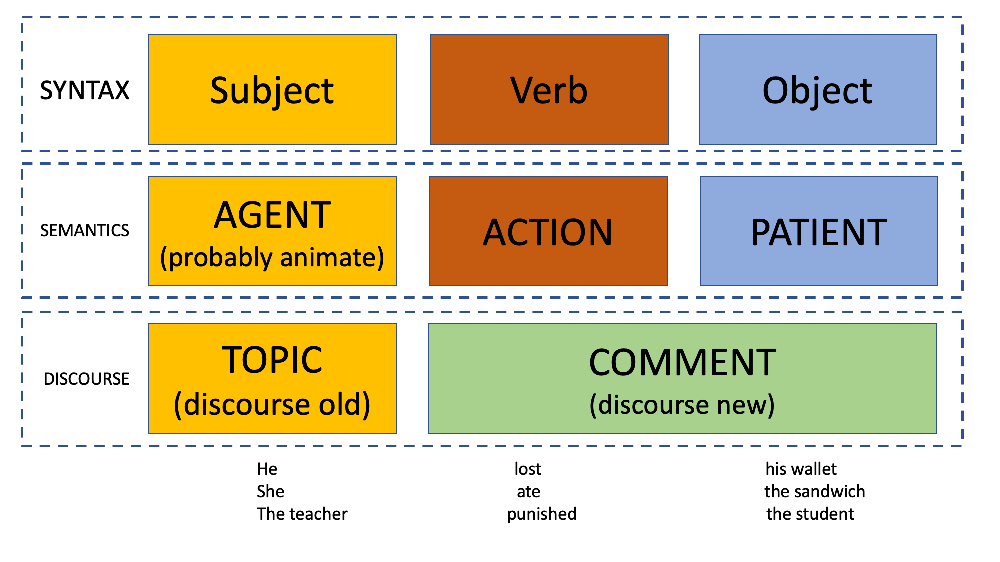
Relative clauses may depart from standard syntactic word order, e.g.
- The dog \(_{OBJECT}\) that the man \(_{SUBJECT}\) chased \(_{VERB}\) was brown
Passive sentences depart from standard semantic word order, e.g.
- The dog \(_{PATIENT}\) was chased by the man \(_{AGENT}\)
In some sentences, there is a contrast between order of mention and order of occurrence
- Before she sat the exam, she took a few headache tablets.
Discourse cues impact on production / comprehension difficulty (see below)
Definition 2 - displacement and movement of phrases
Complex sentences are traditionally interpreted as involving “movement” process.
E.g. the dog moves from the site where it “originates” (sometimes referred to as the “GAP” or “trace”
The dog \(_{OBJECT}\) that the man \(_{SUBJECT}\) chased \(_{VERB}\) ____ was brown
The dog \(_{PATIENT}\) was chased ____ by the man \(_{AGENT}\)
In terms of processing, this means that it is not till the “GAP” that we know what role a Noun Phrase plays in the sentence (see below).
Definition 3 - Embedding
Complex sentences typically involve dependent (embedded clauses). Sometimes these can “interrupt” a clause, posng great difficulties for the listener

Definition 4 - Postponement of “thematic integration”
When Noun Phrases are introduced it helps to know what role they play in a sentence
We need to wait for the verb in order to do this
It is difficult to maintain role-less NPs in memory
Verb-final structures, in particular, cause us to maintain role-less NPs.
- The dog \(_{OBJECT}\) that the man \(_{SUBJECT}\) chased \(_{VERB}\) was brown
Compare this with
- The dog \(_{SUBJECT}\) chased \(_{VERB}\) the man \(_{OBJECT}\)
Definition 5 - Interference between like Noun Phrases
When we maintain Noun Phrases in memory, there will be “interference” between Noun Phrases with similar properties, e.g. whether Noun Phrase is a full noun phrase (D + N) or a Pronoun.
Gordon, Hendrick, and Johnson (2004)
Gordon, Hendrick, and Johnson (2001)
Gordon, Hendrick, and Levine (2002)
Some theories describe this interference as “intervention” between a moved and a stationary NP
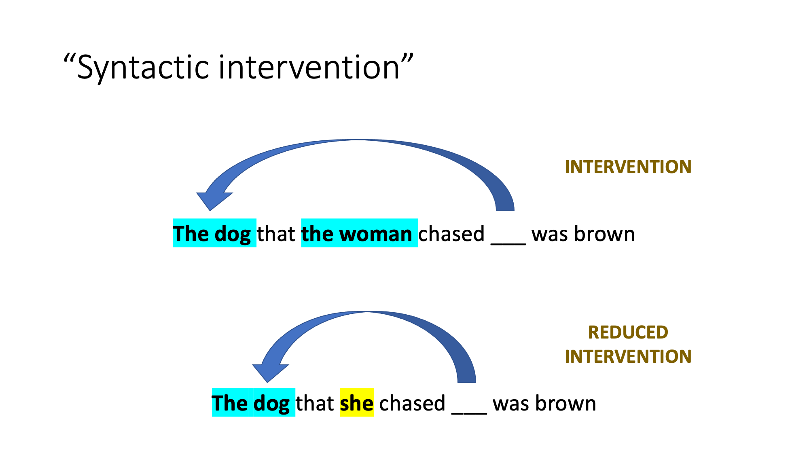
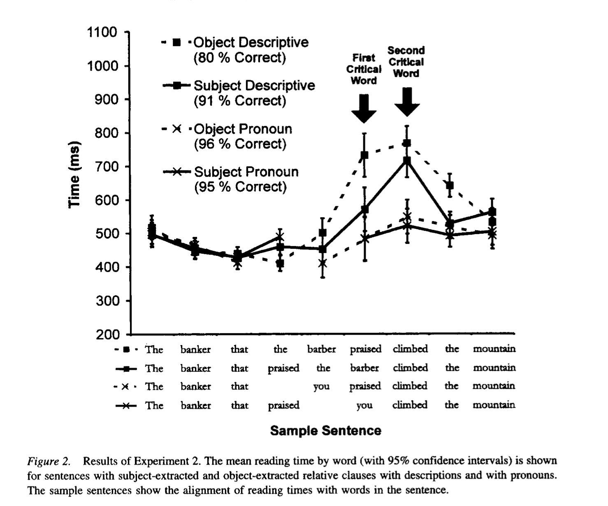
What do complex sentences “do?”
Discourse properties
Though complex sentences are often defined in terms of their structure, they also have key discourse properties
Relative clauses “ground” the head Noun Phrase in the discourse, e.g. That neighbour [who I was telling you about] had an affair with his son’s teacher
Passives turn a non-subject into a topic (the thing we are talking about), e.g. Have you seen the Shawshank redemption? It was directed by Frank Darabont
Complex sentences in expository discourse
“Expository discourse” = a type of discourse where we need to explain something complex, e.g. the rules of a game, an ecosystem etc.
Complex information requires complex language!
PRACTICE
Practice 1 - Identifying complex sentences
The mode is not the best measure because there are two modes that are very far apart
A router is any piece of hardware or software that forwards packets based on their destination IP address. Routers work, therefore, at Layer 3, the Network layer. Classically, routers are dedicated boxes that contain at least two connections, although many routers contain many more connections.
- Like rainforests, coral reefs contain many animals and plants that produce potentially valuable chemicals. For this reason, it is important to protect the reefs from damage from many sources. Unfortunately, reefs are in danger from natural disasters and from humans. Natural forces, such as water that is too warm,can kill corals and produce a phenomenon called coral bleaching. Organisms that eat living corals, such as the crown-of-thorns sea star, can greatly damage reefs.
(All examples taken from Marilyn Nippold, RCSLT Keynote presentation, 2021)
Practice 2 - placing sentences in order of difficulty
Which of these sentences are difficult, and why?
She had a bad tummy because she ate too many pies
Because she ate too many pies she had a bad tummy
The sausage that I dropped fell on a clean surface, so I took the risk and popped it my mouth
The lawyer that the disgruntled employee visited laid out the facts of the case as best she could.
Mary was not trusted by her colleagues
Janice got chosen for the school play
Which man was the woman chasing?
Who did she chase?
Practice 3 - comprehension / elicitation
How would you test comprehension of / elicitation of complex sentences?
Eliciting complex sentences
- Priming
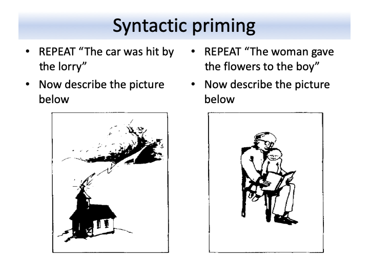
- Sentence completion
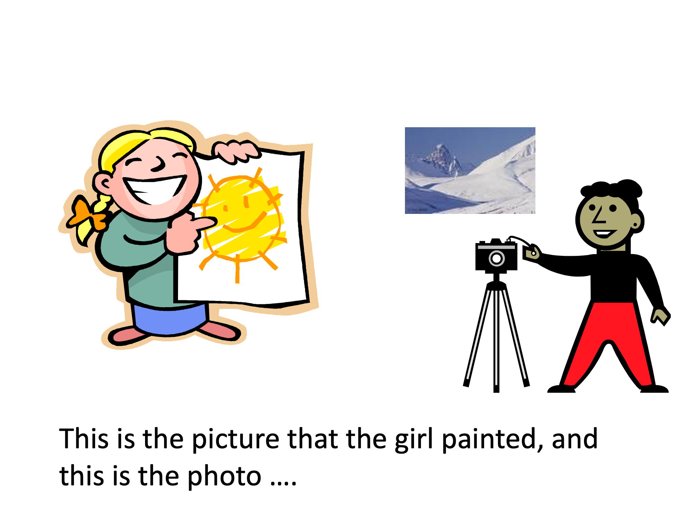
- Elicitation with visual prompt

- Who is bald?
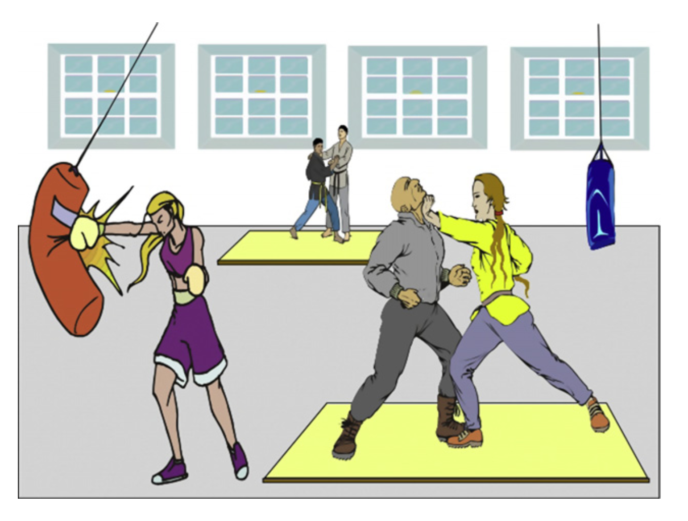
- Definitions game, e.g. with cards. A defines an object, e.g. “This is something which you use to put up a picture,” and B selects a picture, e.g. A HAMMER
Testing comprehension of complex sentences
- Forced choice picture-selection task
For this kind of task to work, sentences must be “reversible,” i.e. interpretation based on misunderstanding the sentence needs to be as plausible as correct interpretation.
IMPORTANT POINT: Picture selection tasks test comprehension of sentences which are particularly complex due to presence of FULL NPs.
- Agent-identification task
“The horse is getting kicked by the cow. Who’s naughty?”
The child puts the naughty animal in the naughty box
- Act out task
“The horse is getting kicked by the cow.” Then the participant has to act out the event with toys.
Theories of difficulty with complex sentences
Exemplar / prototype theories
Our brain contains “ideal” models for things (words, categories, structures etc.)
What is the “ideal” James Bond film?
What is the “ideal” vegetable?
What is the “ideal” tool?
What is the “ideal” bird?
Prototype theory = we have an actual representation of ideal models
Exemplar theory = we create ideal representations spontaneously on the basis of past experience.
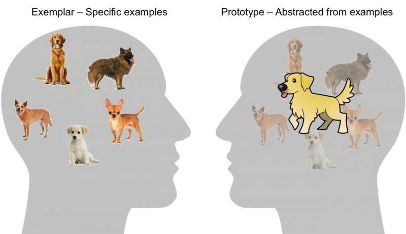
Some researchers have suggested that our linguistic representations are exemplar-based Bybee (2013), Ambridge (2019).
If this is the case, then our exemplars contain relatively fine-grained, detailed, non-abstract information, e.g. object relatives tend to contain animate heads, and a pronoun in the second argument slot
- The sausage that I dropped fell on a clean surface
Or passives tend to contain affected subjects
- Janice got chosen for the school play
Working memory-based theories
Individuals with limited working memories appear to have difficulties understanding sentences where interference between like NPs is presumed
J. Montgomery (2000)
J. W. Montgomery and Evans (2009)
Language production accounts
We have a strong tendency to avoid structures with full Noun Phrases which are (a) close to each other (b) thematically unintegrated.
“Avoidance phenomena”
Who is bald?
In order to avoid producing two full NPs close to each other we need to use the passive, e.g.
- The man who is being hit by the woman
Avoidance rates increase during development, possibly because adults are better at adopting avoidance strategies.
Contemori and Belletti (2013)
| Age | Percentage of avoidance structure |
|---|---|
| 4;0 - 4;11 | 5% |
| 5;0 - 5;11 | 12% |
| 6;0 - 6;11 | 15% |
| 7;0 - 7;11 | 5% |
| 8;0 - 8;10 | 40% |
| Adult | 97% |
“Structural” theories
Relativised Minimality: structural theory which proposes that sentences are more difficult to understand when “like” crosses “like” Rizzi (1990)
What happens in development
Relative clauses
Early types of relative clauses are “presentational,” i.e. don’t involve coordinating relative clause with the main clause, e.g. Brandt, Diessel, and Tomasello (2008)
- There’s the cake she made
Young children’s production of relative clauses is greatly helped when discourse / animacy properties of relative clauses match those of the input Kidd et al. (2007)
Passives
Early forms of the passive involve STATE verbs
- It’s broken
Later forms involve EVENT verbs
- The butterfly was killed by the verb
It is not until about 5;0 or 6;0 that children are able to understand passives with non-action verbs, e.g. perception verbs Maratsos et al. (1985)
- Thd dog was seen by the cat
Adults also seem to find passives more acceptable if they contain event verbs and highly affected subjects. Ambridge et al. (2016)
Temporal conjunctions
de Ruiter et al. (2018)
When presentation of main clause and dependent clause is “iconic” (i.e. order of mention matches order of occurrence), children show much better comprehension:
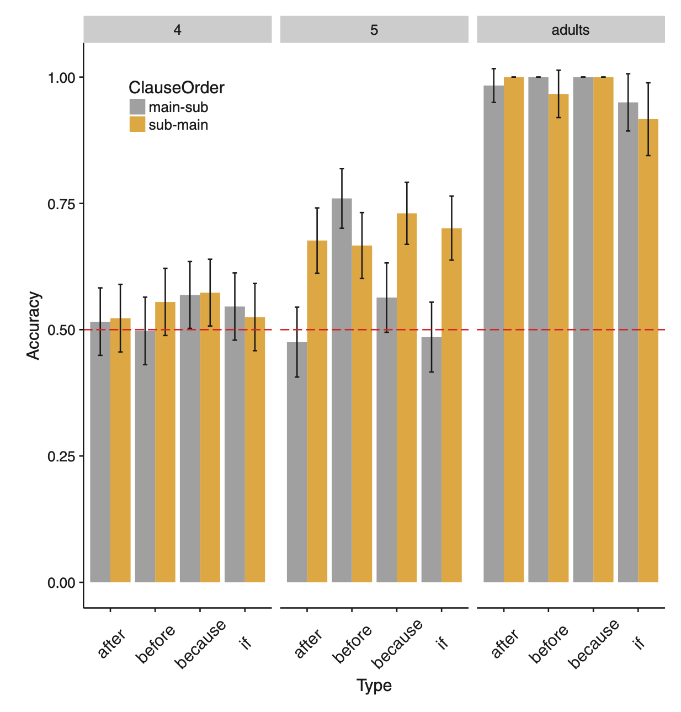
Production data from corpora demonstrates similar patterns:
Ruiter et al. (undefined/ed)
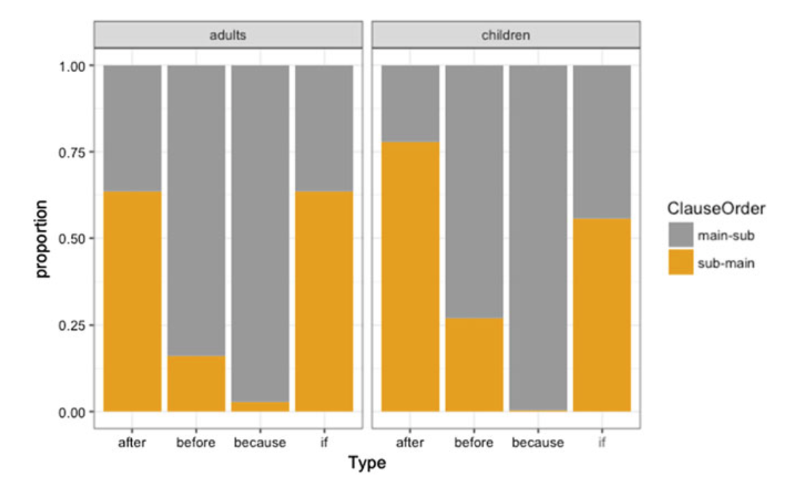
Difficulties of language impaired individuals
“Steeper profiles” in language-impaired individuals
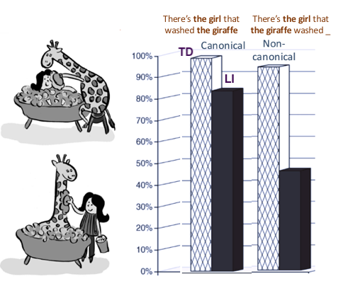
Dependency on standard word order (children)
Evans and MacWhinney (1999)
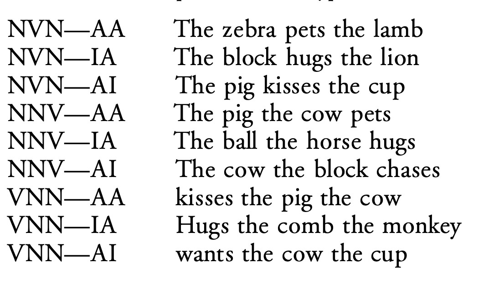
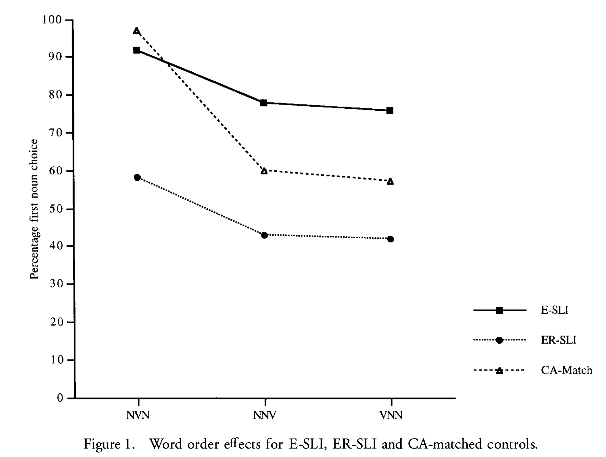
Dependency on other cues (children)
Evans & MacWhinney
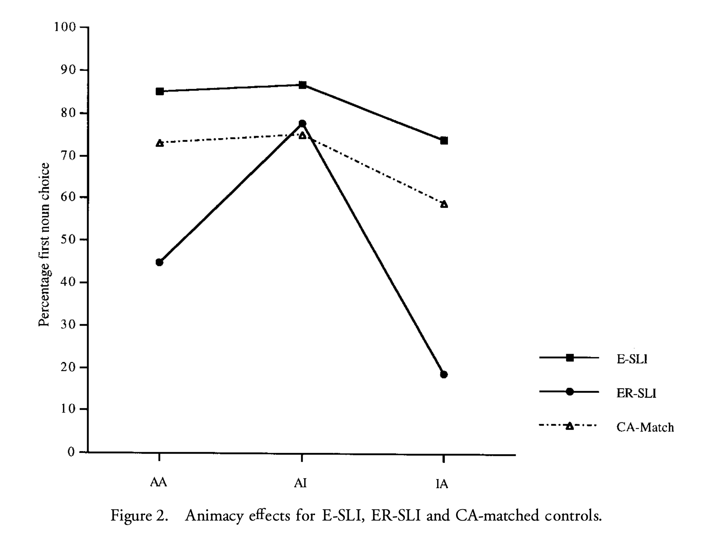
Association between working memory difficulties and processing of complex sentences (children)
There is generally a strong association between working memory abilities in children and the ability to understand complex sentences
Complexity approaches to intervention (adults)
Training on more complex sentences generalises to simpler sentences!

Intervention approaches
Working memory training
Zakariás, Salis, and Wartenburger (2018)
3 individuals with aphasia. Working Memory training (“nback” task) led to improvements in understanding of complex sentences.
Stanford, Durrleman, and Delage (2019)
Effect of working memory training on use of third person accusative clitics in French, e.g. Jean le voit (Jean sees him). This seems to involve movement of the NP him to a higher position.
Increased exposure via story-telling / environmental manipulation
Narratives which focus on indirect speech lead to improvements in use of indirect speech. Serratrice, Hesketh, and Ashworth (2015)
Narratives which focus on passives lead to improvements in use of passives Garraffa, Smart, and Obregón (2021)
Curran et al. taught complex sentences involve adverbs of causation (if, because) in the context of science classes. This is because science classes involve a discussion of causality. The intervention (based on metalinguistic approaches) was effective, but there was limited evidence of generalisation to academic learning. Curran and Owen Van Horne (2019)
Metalinguistic approaches
Ebbels et al. (2013)
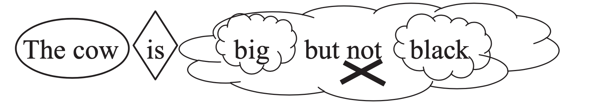
Working with cues
Making “cues” (animacy cues, discourse cues) consistent with the input can facilitate learning, e.g. Kidd et al. (2007).
Which of the following have supportive cues?
The car that she bought was yellow / The cat that the dog chased was brown.
Because she ate the pie she was ill / She at the pie because she was ill
Which dog was the cat chasing? / What did it chase?
The parrot was seen by the koala / The parrot got chased by the cat
A complexity hierarchy for relative clauses
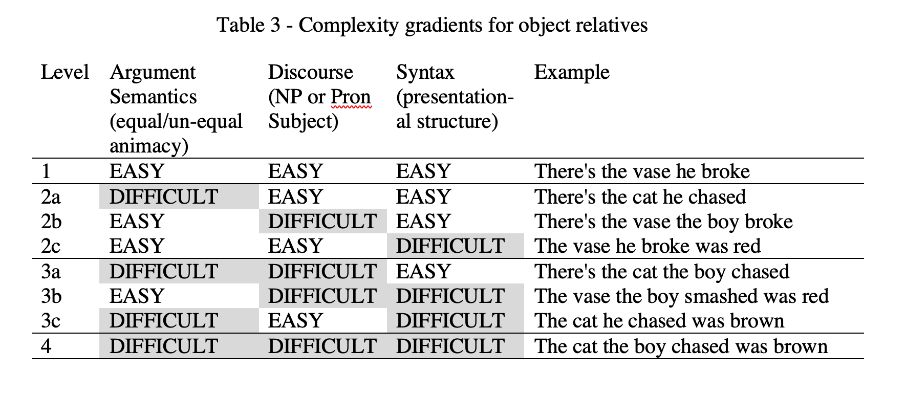
A complexity hierarchy for passives
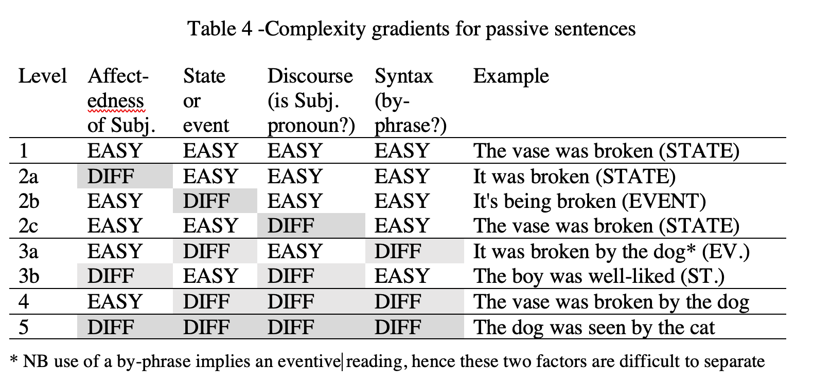
Complexity gradients for object questions
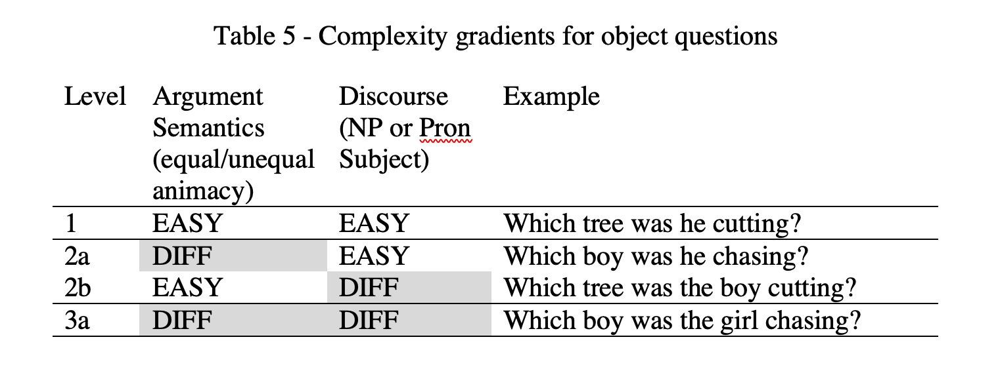
But what to do with these complexity gradients?
Van Horne, Fey, and Curran (2017)
We need to “disrupt” exemplar-based systems by exposing children to more complex stimuli.
NB paper investigated past tense production, not complex sentences.
Expository discourse
What is expository discourse?
“Expository discourse” = a discourse which involves explaining something complicated, e.g. the rules of a game of sport, or a topic in science (e.g. an ecosystem)
Can be contrasted with “narrative” discourse, or “conversational” discourse.
Expository discourse and language development
There is a strong relationship between complexity of discourse and linguistic complexity. Nippold and Scott (2010)
Strong developmental trajectory for relative clauses with moderate effect of expository discourse
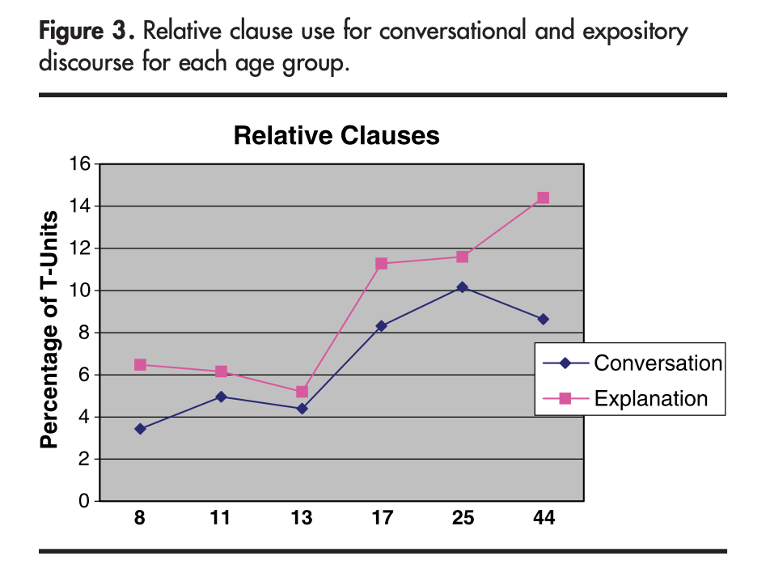
Moderate growth in adverbial clauses, but dramatic effect of expository discourse.
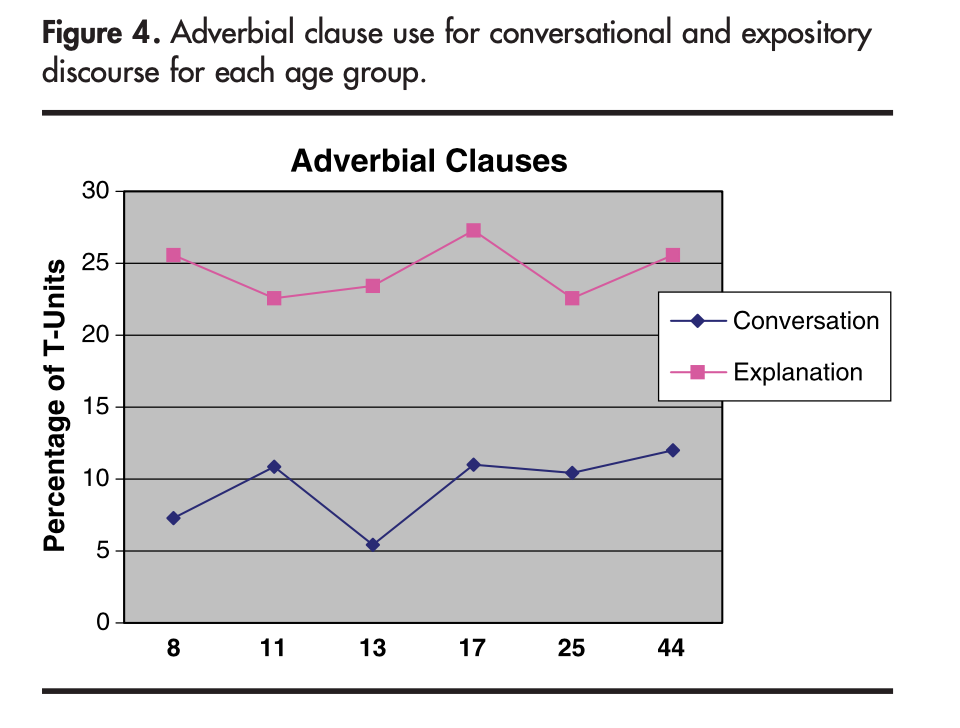
Expository discourse and language impairment
Older children / adolescents with language impairments overcome more obvious difficulties, e.g. morphological errors, but main difficulty is using complex syntax in the service of “expository discourse.”
But introduction of expository discourse leads to a significant boost in complexity! (see below)
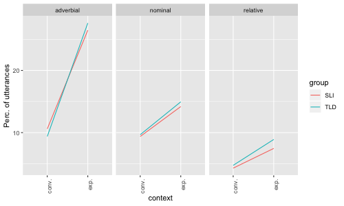
Could we generate expository discourse contexts in order to teach complex syntax to language-impaired children?